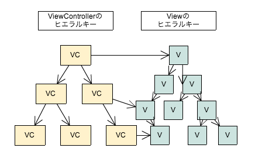

View・ViewControllerのHierarchy

Responder Chainでうまくいかない場合
-
UIPopoverControllerはNSObjectのsubclassであり、UIResponderのsubclassではない。
よってnextResponderにならない。
-
ModalViewはWindow objectのsubviewであり、RootViewControllerから始まるView Hierarchyの下に無い。
↓
これらのView内で発生したeventはPopoverControllerやModalViewのViewControllerを保持しているViewControllerに伝えたい
Responder Chainを一部変更したい
- 任意のobjectをnext responderに設定出来る
- next responderを設定しない場合はdefaultのnext responderが使われる
↓
NSObjectのカテゴリとして実装
その他Tips
-
eventのselectorが偶然かぶってしまうのを防ぐために、prefixを付けています。
Responder Chain Eventの頭文字を取って「rce」をprefixとして使用。